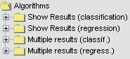

There exists several types of algorithms according to their functionality. Let us
see as they are:
- Pre-process: they are discretization algorithms, instances selection and features selection.
As their name suggests, they are used to add a pre-processing step over the initial
data set, before applying a knowledge extraction algorithm.

- Methods: they are knowledge extraction algorithms: decision tree and rule extraction in supervised
learning, neural networks, unsupervised learning, etc...

- Post-process: they are algorithms that are inserted in final steps in order to refine the results
obtained by the previous algorithms.

- Test: they are statistical algorithms to analyze the results obtained by the previous methods.

- Results: they are features to show the results obtained by the previous methods.

Within these types, the algorithms are classified according to the
family to whom they belong. These families appear in the drop-down tree, allowing the
navigation through the different algorithms until finding the one the user is interested in, as we can see in the above pictures.